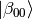
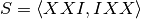
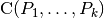
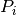
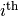

For convinenence, the qecc package provides a subclass of list intended for use with Pauli operators. PauliList instances can be created either by converting an existing instance of a sequence type, or by providing the elements of the new PauliList.
>>> import qecc as q
>>> L = ['I', 'X', 'Y', 'Z']
>>> print q.PauliList(L)
PauliList(i^0 I, i^0 X, i^0 Y, i^0 Z)
>>> print q.PauliList('XYZ', 'YZX', 'ZXY')
PauliList(i^0 XYZ, i^0 YZX, i^0 ZXY)
Tensor products of a qecc.Pauli` with a PauliList result in tensoring the given Pauli group element onto each element of the list.
>>> from qecc import X
>>> print q.PauliList(L) & X
PauliList(i^0 IX, i^0 XX, i^0 YX, i^0 ZX)
In general, a qecc.PauliList can be used anywhere that a list of qecc.Pauli instances is appropriate. For example, the constructor of qecc.Clifford accepts qecc.PauliList instances:
>>> import qecc as q
>>> C = q.Clifford(q.PauliList('XX', q.Unspecified), q.PauliList(q.Unspecified, q.Pauli('ZZ', phase=2)))
>>> print C
XI |-> +XX
IX |-> Unspecified
ZI |-> Unspecified
IZ |-> -ZZ
Subclass of list offering useful methods for lists of qecc.Pauli instances.
| Parameters: | paulis – Instances either of str or qecc.Pauli, or the special object qecc.Unspecified. Strings are passed to the constructor of qecc.Pauli for convinenence. |
|---|
Takes a PauliList, and returns a new PauliList, appending extra_bits qubits, with stabilizer operators specified by lower_right.
| Parameters: |
|
|---|---|
| Return type: | list of qecc.Pauli objects. |
Example:
>>> import qecc as q
>>> pauli_list = q.PauliList('XXX', 'YIY', 'ZZI')
>>> pauli_list.pad(extra_bits=2, lower_right=q.PauliList('IX','ZI'))
PauliList(i^0 XXXII, i^0 YIYII, i^0 ZZIII, i^0 IIIIX, i^0 IIIZI)
Yields an iterator onto the group generated by this list of Pauli operators. See also qecc.from_generators.
Returns a numpy.ndarray of shape (n - k, 2 ** n) containing an orthonormal basis for the mutual +1 eigenspace of each fully specified Pauli in this list. Here, n is taken to be the number of qubits and k is taken to be the number of independent Pauli operators in this list.
Raises a RuntimeError if NumPy cannot be imported.
For example, to find the Bell basis vector  using the stabilizer formalism:
>>> import qecc as q
>>> q.PauliList('XX', q.Unspecified, q.Unspecified, 'ZZ').stabilizer_subspace()
array([[ 0.70710678+0.j, 0.00000000+0.j, 0.00000000+0.j, 0.70710678+0.j]])
Similarly, one can find the codewords of the phase-flip code :
>>> q.PauliList('XXI', 'IXX').stabilizer_subspace()
array([[ 0.50000000-0.j, -0.00000000-0.j, -0.00000000-0.j, 0.50000000-0.j,
-0.00000000-0.j, 0.50000000+0.j, 0.50000000-0.j, -0.00000000-0.j],
[ 0.02229922+0.j, 0.49950250+0.j, 0.49950250+0.j, 0.02229922+0.j,
0.49950250+0.j, 0.02229922+0.j, 0.02229922+0.j, 0.49950250+0.j]])
Note that in this second case, some numerical errors have occured; this method does not guarantee that the returned basis vectors are exact.
Returns the generators of the centralizer group , where  is the  element of this list. See qecc.Pauli.centralizer_gens() for more information.